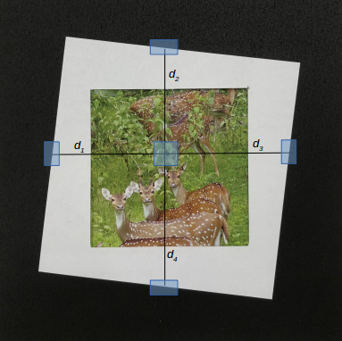

|
The Modulation Transfer Function(MTF) is often used to quantify the spatial resolution of a camera. Typically, we use the value known as MTF50, which is the minimum spatial frequency at which the magnitude of the frequency responseis half its value at zero frequency (i.e. the DC component). An efficient way of computing the MTF50 value is by using the Spatial Frequency Response(SFR). Traditionally, SFR has been captured using specialized charts and controlled setups. These setups are specifically designed to make the calculations invariant to rotation, scale, illumination etc. The use of these charts, however, is limited by the fact that laboratory setups do not always correlate well with real world environment, due to reasons like uncontrolled illumination, varying depth in the scene etc. In this poject, we investigated the problem of predicting spatial frequency response ‘In thewild’, i.e. for casually captured images in uncontrolled real world scenarios.
code /
dataset /
pdf
|

|